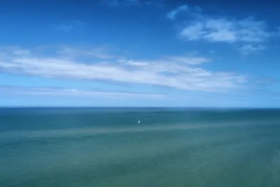
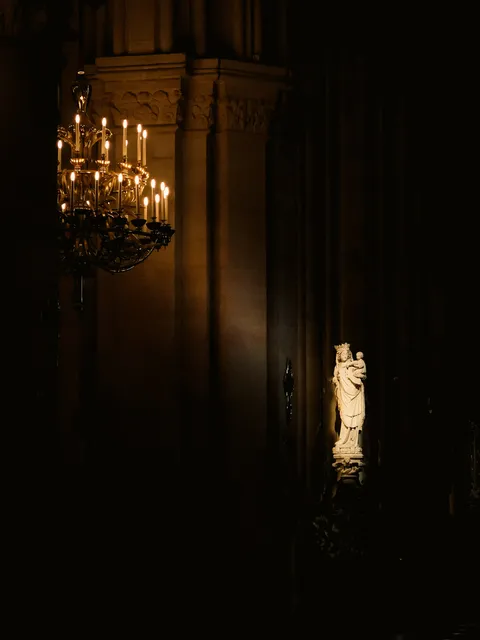
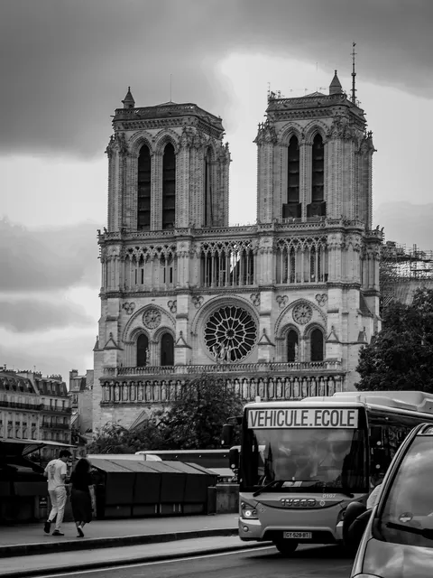
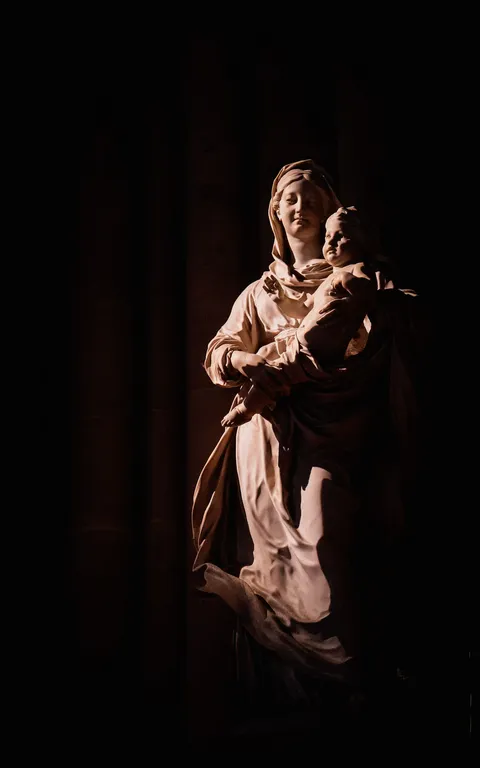

Aller au contenu
Les univers
Visite en 3D
Projets personnels de Thomas Soleil
Couvent
Voir la série
Toulouse
Voir la série
Échappées en montagne
Voir la série
La Garde
Voir la série
Messe
Voir la série




←
→